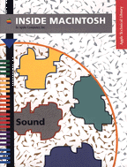

Sound
Inside Macintosh: Sound describes the parts of the Macintosh system software that allow you to manage sounds. It contains information that you need to know to write applications and other software that can record and play back sounds, compress and expand audio data, convert text to speech, and perform other similar operations. With this book, you'll learn how toIf you want to create sounds as part of QuickTime movies, you might also want to look at the book Inside Macintosh: QuickTime.
- record sounds into resources or files
- play sounds stored in resources or files
- convert written text into spoken words
- control sound production at a very low level
- produce sound asynchronously
- compress and expand audio data
- interact directly with a sound input device driver
- gain very fine control over speech production
You can also read updated documentation on Sound Manager 3.3.
Availability: Click below to obtain Inside Macintosh: Sound in any of the following formats.
Printed
Book Contents
- Figures, Tables, and Listings
- Preface - About This Book
- Chapter 1 - Introduction to Sound on the Macintosh
- Chapter 2 - Sound Manager
- Chapter 3 - Sound Input Manager
- Chapter 4 - Speech Manager
- Chapter 5 - Sound Components
- Chapter 6 - Audio Components
- Glossary
- Index